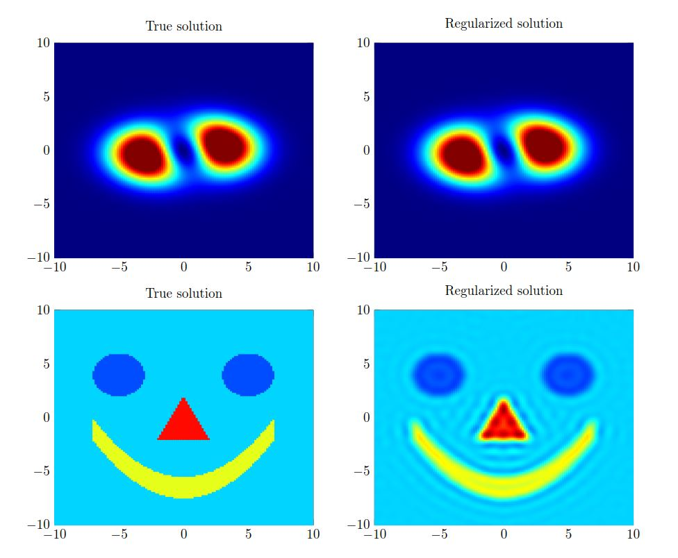
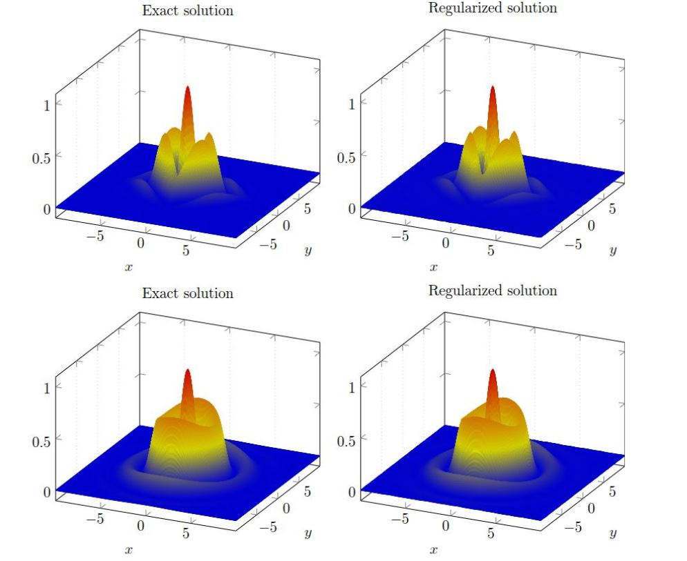
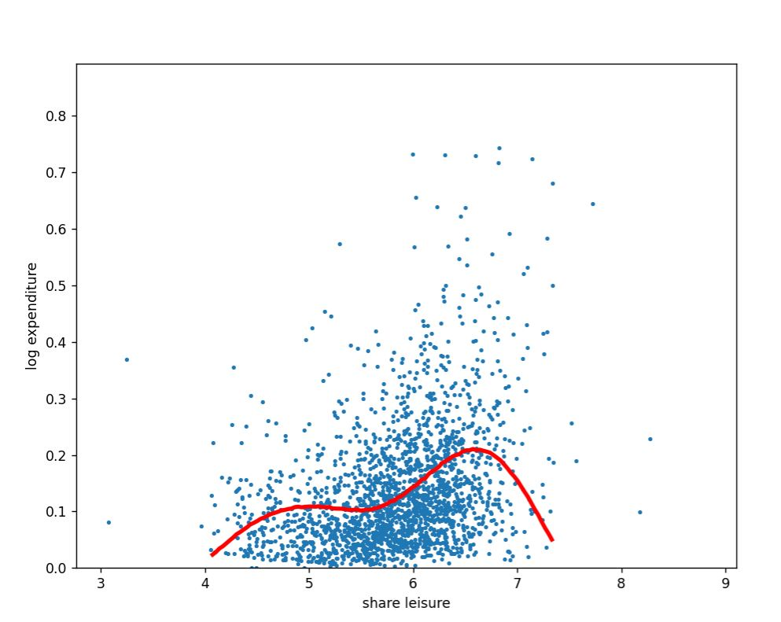
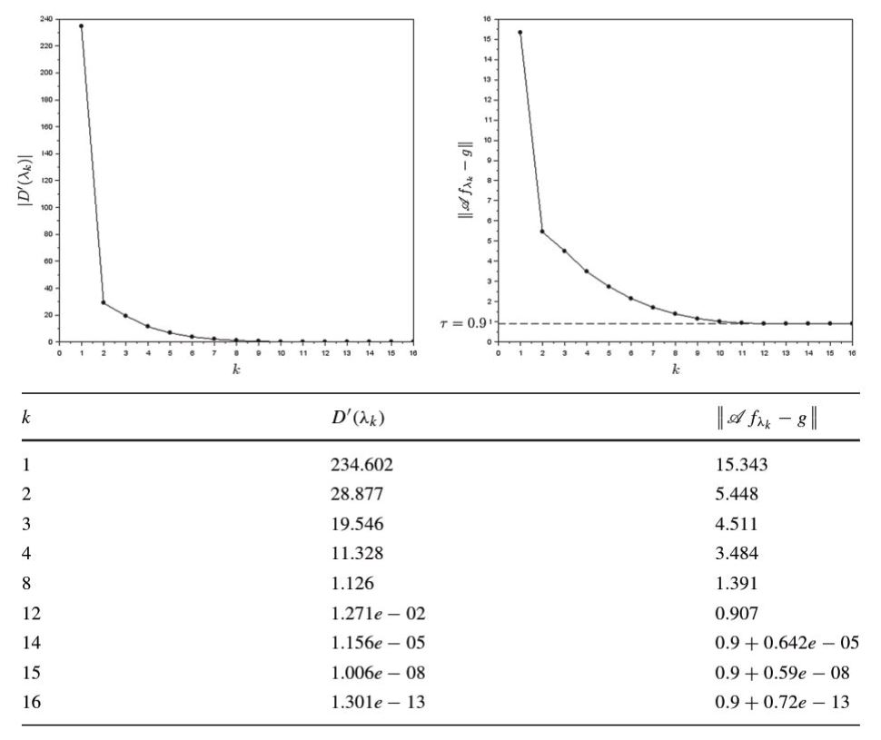
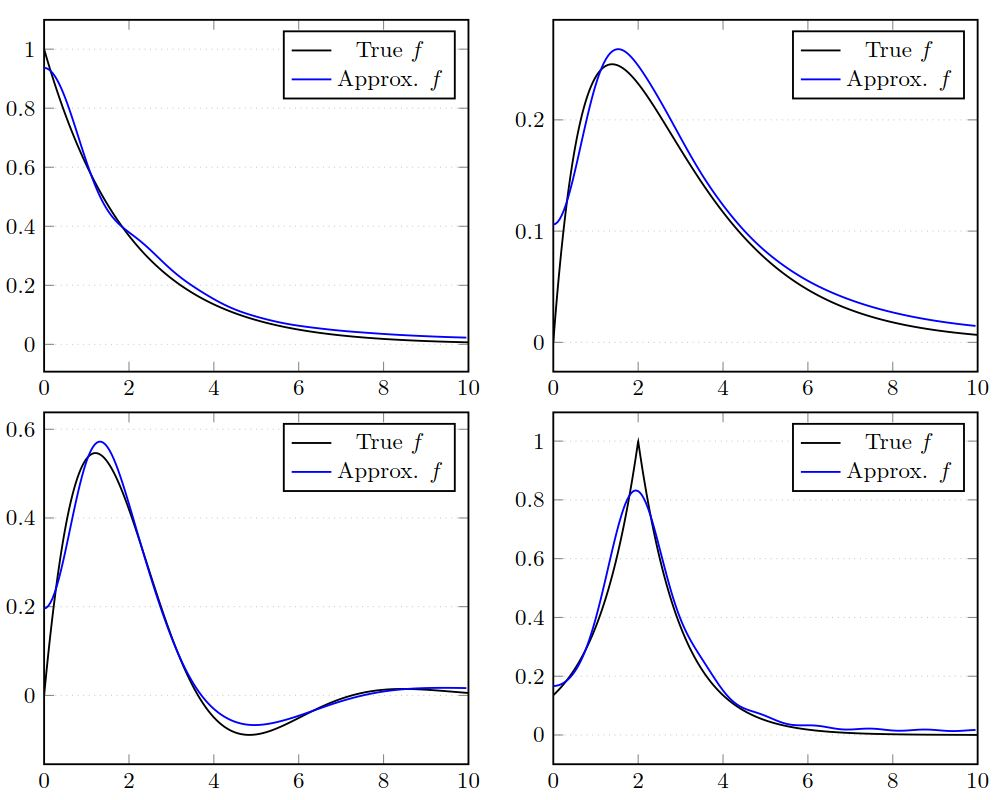

Using a mollification approach, we derive effective algorithm
for the regularization of the Cauchy problem of the Homogeneous
Helmholtz Equation in unbounded domain.

Using a variational mollification approach, we regularize the problem
of non-parametric instrumental regression and apply the resulting
scheme with real world data to Engel curve problem.

Based on Lagrange duality and Quasi-Newton method, we derive a fast
and efficient algorithm for applying the Morozov selection rule to
Tikhonov like regularization methods.

Using a Partial Differential Equation (PDE) approach coupled with mollification regularization
we build an effective numerical algorithm for the numerical
inversion of Laplace transform.